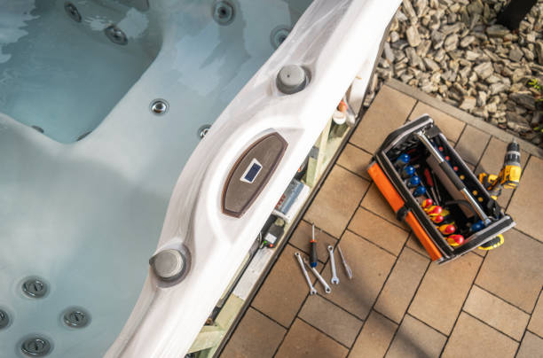
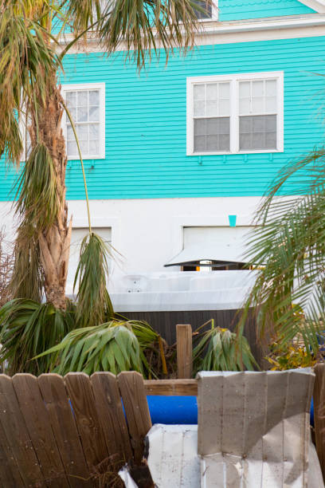

Choose the best Jacuzzi repair company in Monroe City Missouri . We specialize in diagnosing and fixing spa problems promptly. Affordable pricing, expert care, and a reputation you can trust.
Click Here To Call Us (877) 848-1711Are you facing issues with your Jacuzzi? Look no further! Our top-rated Jacuzzi repair services in Monroe City Missouri ensure your spa is back to perfect working condition in no time. Whether it’s a minor leak, malfunctioning jets, or a complete breakdown, we’ve got you covered.
Our team of certified technicians specializes in diagnosing and repairing all types of Jacuzzi problems. Using advanced tools and techniques, we identify the root cause and provide long-lasting solutions. From pump and heater repairs to control system troubleshooting, our expertise spans across all Jacuzzi makes and models.
Why choose us? We pride ourselves on delivering exceptional customer service and fast response times. We understand how important your spa is for relaxation and wellness, and we strive to minimize downtime with efficient repairs. Plus, we use only high-quality replacement parts to extend the lifespan of your Jacuzzi.
Serving Monroe City Missouri and surrounding areas, our Jacuzzi repair services are trusted by homeowners and businesses alike. Regular maintenance and timely repairs can save you from costly replacements—let us handle the hard work for you.
Contact us today for reliable, affordable, and professional Jacuzzi repair in Monroe City Missouri . Relaxation is just a phone call away!
Residential & commercial Jacuzzi repair
Quality services at affordable prices
Immediate 24/ 7 emergency services


Jacuzzis offer a relaxing retreat, but like any appliance, they can experience issues over time. At Jacuzzi repair, we specialize in identifying and fixing common Jacuzzi problems to ensure your spa experience is always perfect.
1. Jacuzzi Water Not Heating Up: One of the most common issues is water failing to reach the desired temperature. This could be due to a malfunctioning heater, thermostat issues, or a clogged filter. Our technicians in Monroe City Missouri will thoroughly inspect your system, identify the root cause, and quickly restore the proper heating functionality.
2. Jets Not Working Properly: If your Jacuzzi’s jets are weak or not functioning at all, it may be due to airlocks, blocked pipes, or pump failure. We have the expertise to clean, repair, or replace the necessary parts, ensuring your Jacuzzi jets operate smoothly, providing the optimal water pressure you expect.
3. Leaking Jacuzzi: Leaks can occur in various parts of your Jacuzzi, including the pipes, pump, or jets. A leak not only wastes water but also increases energy costs. Our team in Monroe City Missouri will locate the leak, fix the issue, and ensure your Jacuzzi remains leak-free and efficient.
4. Cloudy or Green Water: Cloudy or discolored water is often a sign of poor water circulation, filter problems, or chemical imbalances. We’ll evaluate your Jacuzzi’s filtration system and adjust the chemical levels to restore crystal-clear water.
At Jacuzzi repair, we offer prompt, professional Jacuzzi repair services in Monroe City Missouri ensuring your spa is always ready for use. Contact us today to schedule a service and experience the difference!
Residential & commercial Jacuzzi repair
Quality services at affordable prices
Immediate 24/ 7 emergency services
Plumbing issues can lead to frustrating malfunctions in your hot tub. At Jacuzzi repair, we provide comprehensive Jacuzzi plumbing repair and maintenance services that ensure your spa functions smoothly. Our expert team is trained to tackle everything from minor leaks to complex plumbing configurations, making sure every aspect of your system is operational. Regular maintenance not only helps prevent issues but also prolongs the life of your hot tub. With our focus on quality service and customer satisfaction, we are your go-to provider for all your plumbing needs .

Ensuring that your jacuzzi water is safe and enjoyable requires regular monitoring and balancing of chemicals. Imbalanced water can lead to skin irritations, eye infections, or equipment corrosion. Our water quality and chemical balancing services in Monroe City Missouri provide thorough testing and adjustments of your spa’s water chemistry. We analyze pH levels, alkalinity, and sanitizer levels to ensure your hot tub water remains clear, safe, and inviting. By relying on our expertise, you can enjoy peace of mind knowing your water is perfectly balanced for relaxation.
Insulation plays a critical role in maintaining water temperature and energy efficiency in your Jacuzzi. If you’ve noticed inconsistent temperatures or rising energy bills, your insulation may need attention. At Jacuzzi repair, we specialize in Jacuzzi insulation repair and replacement, offering solutions that fit your needs and budget. With our services you can expect improved efficiency and lower costs in energy-related expenses, along with a consistently comfortable spa experience.

Every Jacuzzi requires regular maintenance to keep it in top shape across seasons. Our maintenance and seasonal service ensures your spa is ready for every season, from preparing it for winter to revitalizing it for summer use. At Jacuzzi repair, we are experts in comprehensive maintenance services tailored to your specific needs. Our dedicated technicians work diligently to ensure your hot tub remains a relaxing haven all year round.

Preparing your Jacuzzi for winter is crucial to prevent damage from freezing temperatures. Our specialized winterization services include thorough draining, insulating, and protective maintenance to ensure your hot tub withstands the winter months safely. At Jacuzzi repair, we ensure that you can focus on enjoying your hot tub during the warmer seasons, knowing that it’s been properly protected during the colder months .
Regular maintenance and cleaning are the keys to enjoying a long-lasting and efficient hot tub. At Jacuzzi repair, we offer comprehensive Jacuzzi maintenance services that keep your spa in pristine condition. Our professional technicians will perform routine checks, cleaning, and chemical balancing to ensure optimal performance. We customize our maintenance plans according to your usage and requirements, providing you with flexibility and convenience. By prioritizing regular maintenance, you significantly reduce the risk of costly repairs and enhance your spa experience. Trust us to care for your Jacuzzi, ensuring you enjoy it without worry.

Proper chemical treatment and water balancing are vital for a healthy hot tub experience. Incorrect chemical levels can harm users and damage the equipment. At Jacuzzi repair, we provide expert chemical treatment and water balancing services to ensure that your spa remains clean and safe for use. Our technicians conduct thorough evaluations and adjustments, leaving you relaxed and confident that your hot tub water is at its best .

Whether you’ve just installed a new jacuzzi or are bringing an existing one out of storage, proper start-up procedures are essential. Our jacuzzi start-up services include a thorough assessment of all systems, filling the tub, balancing the water, and ensuring all equipment is functioning correctly. During the start-up process, we provide valuable tips and advice for maintaining your spa, so you can enjoy it to the fullest. Trust our team to help you get started on the right foot, ensuring a safe and pleasurable hot tub experience.

Your spa cover is vital for energy conservation and maintaining water temperature. Damaged covers can lead to increased heating costs and debris in your jacuzzi. Our spa cover repair and replacement services in Monroe City Missouri focus on ensuring you have a secure, functional cover that’s easy to use. We assess the condition of your existing cover and recommend either repair or replacement. We offer a variety of high-quality covers suited for all types of spas, ensuring your investment is adequately protected. Let us provide you with a cover solution that enhances the functionality and safety of your jacuzzi.
Years Experience
Expert Technicians
Satisfied Clients
Compleate Projects
At Fancy Jacuzzi Repair, we understand the importance of a fully functioning jacuzzi to your relaxation and comfort. Serving Monroe City Missouri and the surrounding areas, our team is dedicated to providing top-notch jacuzzi repair services that ensure your spa experience is never interrupted. Whether it’s a minor issue or a major malfunction, we’ve got you covered with expert solutions tailored to your specific needs.
Why trust Fancy Jacuzzi Repair? Our certified technicians possess extensive experience working with all jacuzzi brands and models, using the latest diagnostic tools and techniques to identify and fix any issues quickly and effectively. We pride ourselves on our prompt and reliable service, ensuring that your jacuzzi is up and running without unnecessary delays.
When you choose us, you’re choosing a company that prioritizes customer satisfaction. Our commitment to delivering exceptional service is matched by our transparent pricing and comprehensive warranty on all repairs. Whether you need routine maintenance or urgent repairs, our team is always ready to assist you with affordable, high-quality solutions.
Fancy Jacuzzi Repair has earned a reputation as the trusted name for jacuzzi repair in Monroe City Missouri thanks to our proven track record of excellence and attention to detail. We go the extra mile to ensure your jacuzzi is restored to optimal condition, so you can enjoy peace of mind and ultimate relaxation. Choose us for reliable jacuzzi repair you can count on!
Your hot tub's pump is the heart of your spa, circulating water and keeping it clean. If your jacuzzi is experiencing low water pressure, strange noises, or failure to start, it may be time for a professional Jacuzzi pump repair. Our experienced technicians in Monroe City Missouri specialize in diagnosing and fixing pump issues, ensuring your spa operates at peak performance. We use high-quality replacement parts and follow industry-standard repair procedures. Choosing us means you’ll receive prompt service, a satisfaction guarantee, and expert advice on maintaining your pump to prevent future issues.
A hot tub heater is essential for maintaining the perfect water temperature, allowing you to unwind and relax after a long day. If your heater is malfunctioning, you need a reliable service provider who can quickly diagnose and repair the issue. At Jacuzzi repair, our experts specialize in hot tub heater repairs, ensuring your spa remains inviting and warm. We conduct thorough inspections to determine whether the problem lies in the heating element, thermostat, or electrical connections, allowing us to deliver fast and effective solutions. Our commitment to excellence and customer satisfaction makes us the top choice for hot tub heater repairs in the area.
Water loss in your Jacuzzi can lead to both structural and financial strain. If you suspect a leak, you need specialists who can not only identify but also effectively repair the leak to avoid further damage. With years of experience in Jacuzzi leak detection and repair, Jacuzzi repair offers a meticulous service designed to locate leaks swiftly and fix them correctly. Our team employs advanced methods and technologies to detect even the smallest issues, ensuring that your hot tub remains functional and efficient through every season .
Is your jacuzzi motor making unusual sounds, struggling to perform, or failing to start? The motor is a vital component that powers multiple functionalities of your jacuzzi. At Jacuzzi repair, our team specializes in jacuzzi motor repair, ensuring that your spa functions smoothly and efficiently. We offer comprehensive assessments to diagnose any motor-related issues quickly, using only the highest quality replacement parts to ensure lasting repairs. Our technicians are trained to service a wide range of jacuzzi models, providing professional repairs that enhance performance and extend the life of your hot tub. Choose Jacuzzi repair for dedicated jacuzzi motor repair services that prioritize your comfort and satisfaction.
Enjoying a soothing massage is one of the primary benefits of soaking in a hot tub. If your jets aren't functioning correctly, it can be incredibly frustrating. Jacuzzi repair specializes in Jacuzzi jet repair and replacement, ensuring your spa provides a relaxing experience every time. Our technicians can quickly determine whether a jet can be fixed or needs replacement, all while using high-quality replacement parts. With our service in Monroe City Missouri you will get back to enjoying invigorating massages at home in no time.
Your jacuzzi control panel is the brain of your spa, allowing you to manage temperature, jets, and lighting. If the control panel is unresponsive, displaying error messages, or is not functioning as it should, it can lead to an unsatisfactory experience. Our control panel repair service specializes in diagnosing and fixing issues with both digital and analog controls. We utilize state-of-the-art diagnostic equipment and have access to genuine replacement parts to ensure your control panel works perfectly again. Rely on us for fast service and expert solutions to keep your jacuzzi operating smoothly.
Proper water pressure is essential for the optimal function of your jacuzzi. Water pressure issues can lead to ineffective heating, poor jet performance, and dissatisfaction with your spa experience. Our team specializes in diagnosing and resolving water pressure problems in Monroe City Missouri . We address issues such as clogged filters, leaky pipes, and malfunctioning pumps to restore the ideal pressure efficiently. With our comprehensive repair solutions, you can enjoy uninterrupted relaxation in your hot tub. We pride ourselves on our ability to quickly identify the root of the problem and implement effective solutions.
Electrical issues within your jacuzzi can be complex and potentially dangerous. From faulty wiring to blown fuses, any electrical concern must be addressed by certified professionals. At Jacuzzi repair, our team specializes in identifying and resolving jacuzzi electrical issues swiftly and safely. We possess extensive knowledge of jacuzzi wiring systems and utilize advanced diagnostic tools to pinpoint problems accurately. Our commitment to safety and quality ensures that all repairs are performed up to industry standards. Don’t take chances with electrical issues—contact Jacuzzi repair for expert jacuzzi electrical troubleshooting and repair services and enjoy peace of mind knowing your spa is in good hands.
Proper water circulation is crucial for a clean and enjoyable hot tub experience. If you're facing water circulation issues, contaminants may build up, leading to an unclean environment. At Jacuzzi repair, we specialize in diagnosing and repairing hot tub water circulation problems, ensuring that your system works effectively and efficiently. Our team assesses filters, pumps, and plumbing to identify any hindrances to fluid movement. Reset the rhythm of your hot tub’s circulation with our expert services in Monroe City Missouri .
Filters play a crucial role in keeping your jacuzzi water clean and safe for use. Over time, filters can become clogged or damaged, leading to inadequate filtration and poor water quality. Our jacuzzi spa filter replacement service is designed to ensure you have the right filters installed. We carry a wide selection of filters to fit any jacuzzi model, and our knowledgeable staff can help you choose the best option for your needs. Regular filter maintenance and replacement will prolong the life of your spa equipment, and our expert team is here to guide you every step of the way.
Jacuzzi ownership comes with various challenges, and at Jacuzzi repair, we offer specialized repair services tailored to meet your unique needs. Our seasoned technicians are trained to address a wide range of Jacuzzi issues, from mechanical failures to electrical troubleshooting. We utilize our deep industry knowledge and advanced diagnostic tools to quickly identify problems and implement effective repairs. Whether it’s a minor adjustment or a major overhaul, our commitment to excellence allows us to enhance the performance and enjoyment of your spa. With a focus on transparency and customer communication, we guarantee that you’re always informed throughout the repair process.
An ozone system enhances water purification in your hot tub by reducing the need for chemicals and maintaining clean water. If you notice unusual odors or reduced water clarity, you may have an ozone system malfunction. Our jacuzzi ozone system repair service ensures that your ozone generator is functioning correctly, promoting a healthier and more enjoyable spa experience. We utilize advanced diagnostic tools to identify issues and implement effective repairs or replacements, allowing you to relax and enjoy your spa without the hassle of murky water.
Over time, the shell of your hot tub can suffer from wear and tear, leading to unsightly cracks, fading, and discoloration. Our hot tub resurfacing and reconditioning services in Monroe City Missouri can restore your spa to its former glory. We use high-quality materials and state-of-the-art techniques to repair and refinish the surface of your hot tub, ensuring it looks new and inviting. Our reconditioning services also enhance the longevity of your spa, protecting it from future damage. Trust us to revitalize your hot tub and make it a centerpiece of relaxation in your home.
Regular recalibration and diagnostics ensure your jacuzzi is operating at optimal levels. Factors such as temperature inaccuracies, jet performance, and chemical readings can indicate the need for professional recalibration. Our jacuzzi recalibration and system diagnostics provide a comprehensive analysis of your spa’s systems, ensuring everything works in harmony. We identify any discrepancies and make necessary adjustments to guarantee the best performance from your jacuzzi. By choosing us, you’re ensuring your equipment is finely tuned for optimal relaxation and enjoyment.
A well-functioning drainage system is essential for any hot tub, preventing water accumulation and ensuring proper water flow. At Jacuzzi repair, we specialize in diagnosing and repairing drainage issues in Jacuzzis. Our team assesses everything from clogs and blockages to faulty drainage pumps, implementing effective solutions tailored to your specific concerns. By addressing drainage problems quickly, we help prevent further damage and costly repairs down the line. Our focus on quality service and customer education ensures you understand your spa’s systems, allowing you to enjoy a hassle-free experience every time.
The blower in your jacuzzi is responsible for creating those relaxing bubbles that enhance your soaking experience. If your jacuzzi is not producing bubbles or if the blower is making strange noises, it’s time for a repair or replacement. Our jacuzzi blower repair service in Monroe City Missouri includes comprehensive diagnostics to identify the issue and restore normal functionality. We specialize in repairing existing blowers or providing high-quality replacements to ensure your spa continues to deliver the ultimate relaxation experience. Our fast, reliable service helps you get back to enjoying your hot tub quickly.
The ambiance of your hot tub can greatly affect your overall experience, and lighting plays a crucial role in creating the perfect atmosphere. If your Jacuzzi lights are flickering or malfunctioning, reach out to Jacuzzi repair. Our lighting repair services involve diagnosing the issue, whether it’s faulty wiring, broken fixtures, or component failures. We carry high-quality replacement parts to ensure your lighting is as bright and inviting as ever. Our dedication to providing exceptional service means we’ll make your Jacuzzi a relaxing retreat you’ll love to spend time in, even after the sun sets.
The hot tub shell is the structural core of your spa that supports the entire functionality. Damage to the shell can lead to leaks and degrade the overall appearance of your hot tub. At Jacuzzi repair, we provide professional hot tub shell repair services, addressing cracks, discoloration, and damage efficiently. Our team utilizes high-quality materials to ensure a long-lasting and durable repair, giving residents in Monroe City Missouri a spa that not only functions properly but looks amazing as well.
After a jacuzzi repair in Monroe City Missouri maintaining its performance and longevity is crucial. Regular maintenance not only ensures your jacuzzi continues to work optimally but also prolongs its lifespan. Here’s a step-by-step guide to help you keep your jacuzzi in top condition after a repair.
1. Regular Water Testing and Balancing:
To keep your jacuzzi's water safe and clean, regularly test the water’s pH, alkalinity, and sanitizer levels. The proper balance prevents corrosion and scaling on both your jacuzzi’s components and the repair work done.
2. Clean Filters Often:
After a repair, it’s essential to keep the jacuzzi filters clean. Clogged filters can affect water circulation, strain the pump, and hinder the jacuzzi’s efficiency. Clean or replace filters as needed, usually every 3 to 6 months, depending on usage.
3. Maintain the Cover:
The jacuzzi cover plays a vital role in protecting your jacuzzi from debris and weather elements. Ensure the cover is in good condition after repairs and use a cover cleaner to remove any buildup. Keeping the cover intact ensures the jacuzzi's efficiency and reduces repair needs.
4. Check for Leaks:
Inspect your jacuzzi for any signs of leaks after a repair. Addressing leaks promptly will help prevent more extensive and expensive issues in the future.
By following these simple yet effective maintenance tips, you can ensure your jacuzzi remains in excellent condition long after the repair, offering you relaxation and comfort in Monroe City Missouri .
Monroe City is a city in Marion, Monroe, and Ralls counties in the U.S. state of Missouri. The population was 2,652 at the 2020 census.
Common issues include pump malfunctions, heater failures, leaks, and jet blockages, all of which we expertly handle .
Whenever possible, we offer same-day repair services for urgent needs.
We pride ourselves on fast response times. In most cases, we can schedule your Jacuzzi repair in Monroe City Missouri within 24-48 hours.
You can call us or book online to schedule your repair appointment in Monroe City Missouri .
Circulation issues are often due to a clogged filter or pump malfunction. We can fix this efficiently .
Yes, we carry high-quality replacement parts to ensure durable and reliable repairs in Monroe City Missouri .
Regular maintenance and prompt attention to small issues can prevent major repairs. We offer maintenance services .
Fancy Jacuzzi Repair offers a wide range of Jacuzzi repair services including fixing leaks, pump and motor repairs, jet replacements, heater issues, and more.
Repair costs vary depending on the issue, but we provide competitive pricing and transparent quotes.
Fancy Jacuzzi Repair serves all neighborhoods and surrounding areas .
Absolutely! Our repair services in Monroe City Missouri are fully insured for your protection.
Yes, we are experienced in repairing or replacing faulty control panels for Jacuzzis .
Yes, we use advanced tools to detect and repair Jacuzzi leaks efficiently in Monroe City Missouri .
Our fast, reliable, and affordable services, combined with expert technicians, make us the top choice for Jacuzzi repairs .
Regular maintenance every 3-6 months is recommended to keep your Jacuzzi in optimal condition. We offer maintenance plans .
Jacuzzi jets often stop working due to clogged filters, airlocks, or pump issues. Our team can quickly diagnose and fix these problems.
Yes, we offer repair and replacement services for damaged Jacuzzi covers .
Yes, we specialize in addressing water pressure issues to restore your Jacuzzi's functionality in Monroe City Missouri .
Most repairs are completed within 1-2 hours, but the timeline depends on the complexity of the issue.
Loud noises may result from a faulty pump or motor. Our Monroe City Missouri technicians can inspect and resolve the issue.
Yes, we specialize in repairing Jacuzzis of all makes, models, and ages across Monroe City Missouri .
Absolutely! Fancy Jacuzzi Repair offers emergency repair services to address urgent issues and get your Jacuzzi running smoothly.
We accept various payment methods, including cash, credit cards, and online payments, for our services .
Contact Fancy Jacuzzi Repair immediately! Our team will troubleshoot and resolve the issue quickly.
Yes, we offer free estimates for all Jacuzzi repairs to help you understand the scope and cost of the work.
Yes, all our technicians are certified and highly experienced in providing top-quality Jacuzzi repair services in Monroe City Missouri .
Yes, we provide repair services for both residential and commercial Jacuzzi systems .
Yes, we provide warranties on our repairs to ensure your satisfaction and peace of mind .
Yes, we can enhance your Jacuzzi with new jets, control systems, and other modern upgrades in Monroe City Missouri .
If your Jacuzzi water isn't heating or takes too long to heat, it may indicate a heater issue. Our experts in Monroe City Missouri can inspect and repair it promptly.
I had an amazing experience with Fancy Jacuzzi Repair. Their service was fast and professional, and they were able to fix my jacuzzi without any issues. I highly recommend them to anyone in Monroe City Missouri .
Profession
The team at Fancy Jacuzzi Repair was fantastic! They arrived on time, diagnosed the issue quickly, and had my jacuzzi up and running in no time. The best jacuzzi repair service in Monroe City Missouri hands down!
Profession
Fantastic service from Fancy Jacuzzi Repair! They fixed my jacuzzi in Monroe City Missouri quickly and efficiently. The technicians were friendly and explained everything in detail. I’m thrilled with their service!
Profession